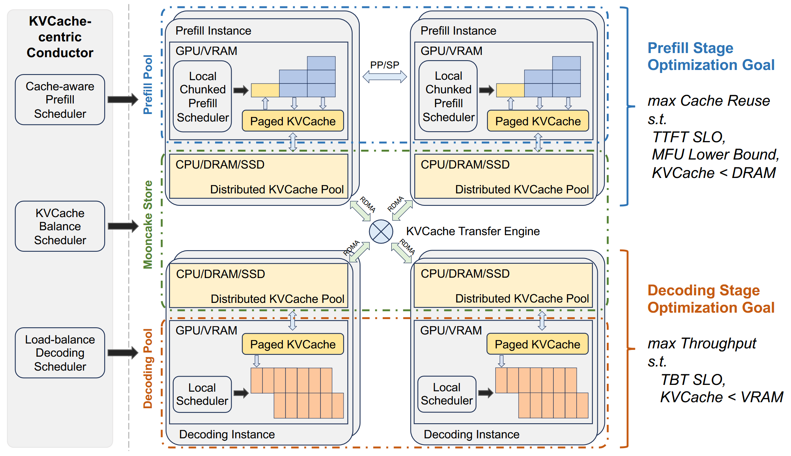
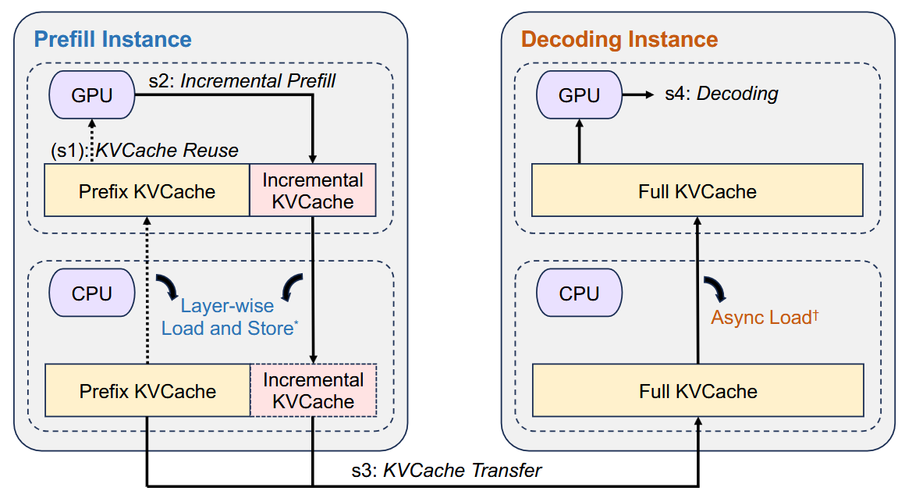
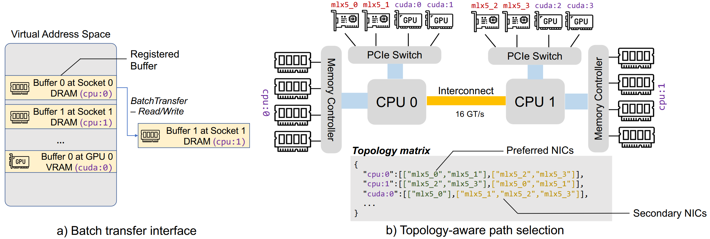
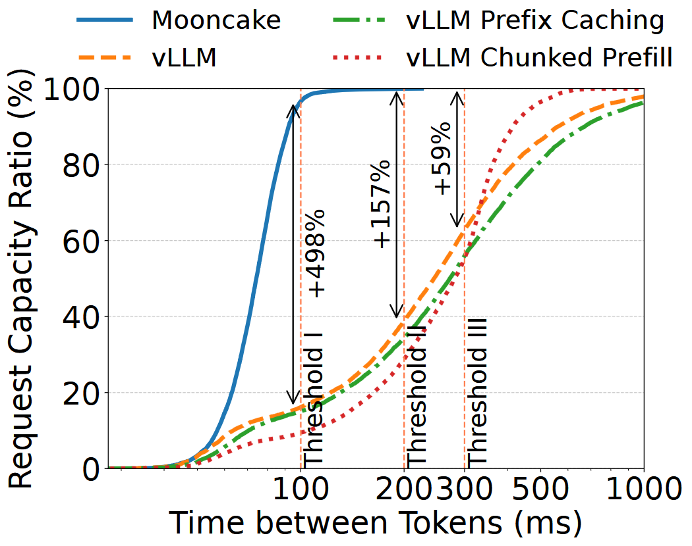
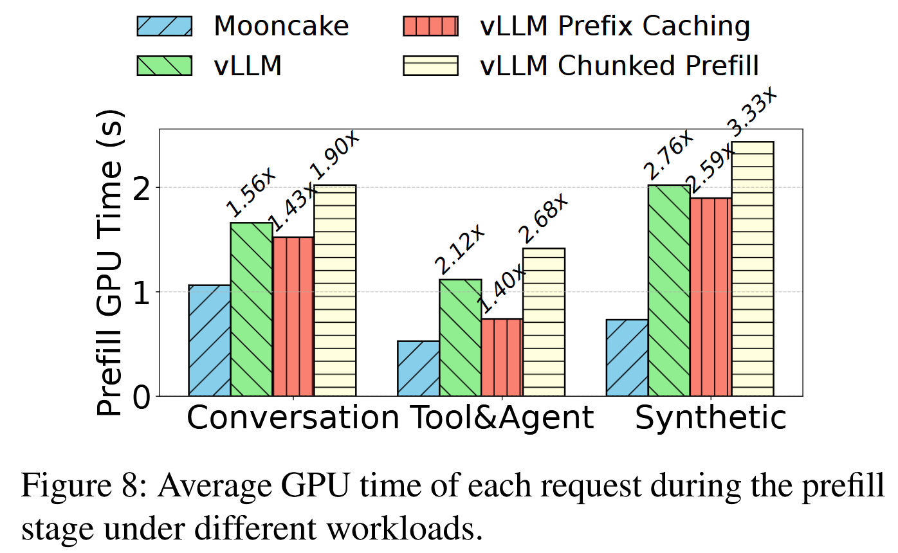
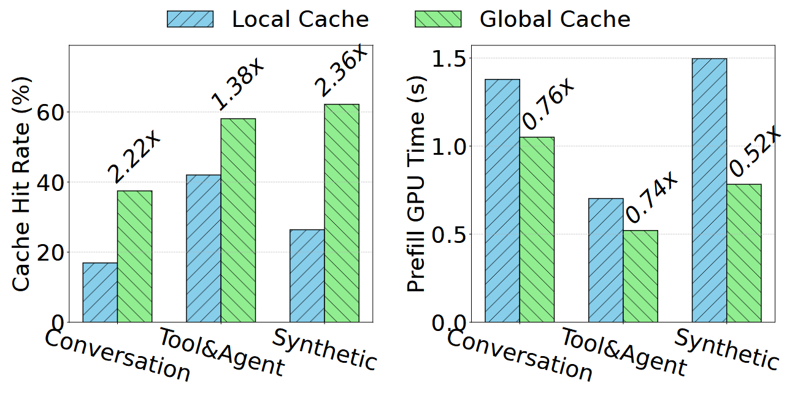
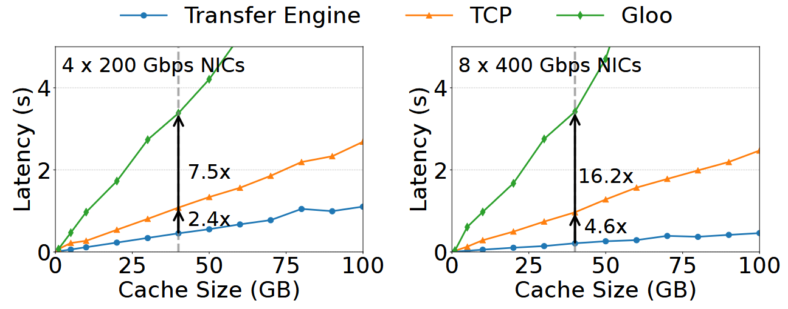

MOONCAKE: Trading More Storage for Less Computation — A KVCache-centric Architecture for Serving LLM Chatbot
FAST ’25
gpu
llm
memory
systems
training
MOONCAKE
Background & Motivation
The Challenge of LLM Serving
- Goal: Maximize overall system throughput to reduce costs while strictly adhering to SLOs.
- Primary SLOs:
- TTFT (Time to First Token): Latency of the prefill stage.
- TBT (Time Between Tokens): Latency of the decoding stage.
Conflicting Workloads in LLMs
- Prefill Stage: Compute-intensive. Processes all input tokens in parallel.
- Decoding Stage: Memory-bandwidth bound. Generates one token at a time sequentially.
- The Issue: Running both on the same integrated GPU nodes causes severe interference, making it difficult to meet TTFT and TBT SLOs simultaneously.
The KVCache Bottleneck

- Prefix Caching: Saves compute by reusing intermediate keys/values (KVCache) of previous prompts.
- Limitation: Local GPU memory (HBM) and single-node host DRAM are too small to store enough KVCache for high hit rates.
- Context windows are growing rapidly (up to 128k+ tokens), exacerbating storage limits.
Motivation: Trading Storage for Computation
- Modern GPU clusters have massive amounts of underutilized CPU, DRAM, SSD, and RDMA network resources.
- Core Idea: Pool these resources across the entire cluster to create a massive, disaggregated global KVCache.
- Transferring this cache over high-speed networks is significantly faster and cheaper than recomputing tokens from scratch.
System Design
MOONCAKE Architecture Overview

- Disaggregated Architecture: Separates Prefill and Decoding nodes.
- MOONCAKE Store: A petabyte-level distributed global cache.
- Conductor: A KVCache-centric global scheduler.
Disaggregated Prefill and Decoding

- Prefill Nodes: Handle compute-heavy prompt processing and generate the KVCache.
- Decoding Nodes: Receive streamed KVCache and handle memory-bound continuous batching for token generation.
- Benefit: Prevents long-context prefill tasks from disrupting the TBT of ongoing decoding tasks.
MOONCAKE Store: Distributed Global Cache

- Stores KVCache in paged blocks across the cluster’s CPU DRAM and SSDs.
- High-Speed Transfer Engine: Utilizes RDMA (up to 8x400 Gbps) for inter-node transfers.
- Topology-Aware Path Selection: Intelligently routes data through the most efficient NICs to avoid PCIe or CPU interconnect bottlenecks.
KVCache-Centric Global Scheduling (Conductor)
- Routes requests based on the physical location of the KVCache, not just node compute load.
- Cache-Aware Routing: Calculates predicted TTFT by weighing compute time saved by the cache against the node’s current queue time.
- Cache Load Balancing: Uses a heuristic-based automated hotspot migration scheme to dynamically replicate “hot” cache blocks and prevent network congestion.
Chunked Pipeline Parallelism (CPP)
- Designed to handle massive context lengths (e.g., 100k+ tokens) without violating TTFT SLOs.
- Splits long prompts into chunks.
- Chunks are processed sequentially across multiple nodes in a pipeline.
- Avoids the heavy, continuous cross-node communication required by traditional Sequence Parallelism.
Evaluation
Environment Setup
- Hardware: High-performance computing cluster. Each node has 8x NVIDIA A800 GPUs and 4x 200 Gbps RDMA NICs.
- Baselines:
- vLLM
- vLLM with prefix caching
- vLLM with chunked prefill
- Workloads: Real-world Conversation traces, Tool&Agent interactions, and Synthetic long-context datasets.
Effective Request Capacity

- Measures the maximum throughput that remains within defined TTFT and TBT SLO thresholds.
- MOONCAKE increases effective request capacity by 59% to 498% compared to baseline methods under real-world conversation workloads.
Prefill GPU Time Reduction

- Global cache maximizes hit rates, drastically reducing the compute time needed for the prefill stage.
- MOONCAKE achieves prefill GPU time reductions of 36%, 53%, and 64% across different workloads compared to standard vLLM.
Global vs. Local Cache Performance

- Restricting cache to a single node (local cache) leads to suboptimal utilization.
- MOONCAKE’s global cache achieves up to a 136% higher cache hit rate than local cache setups.
- Results in up to 48% savings in prefill computation time.
KVCache Transfer Performance

- MOONCAKE’s RDMA transfer engine consistently exhibits significantly lower latency than alternative methods.
- Achieves 2.4x and 4.6x faster transfer speeds compared to standard TCP protocol.
- Fully saturates network bandwidth to hide transfer times behind GPU computation.